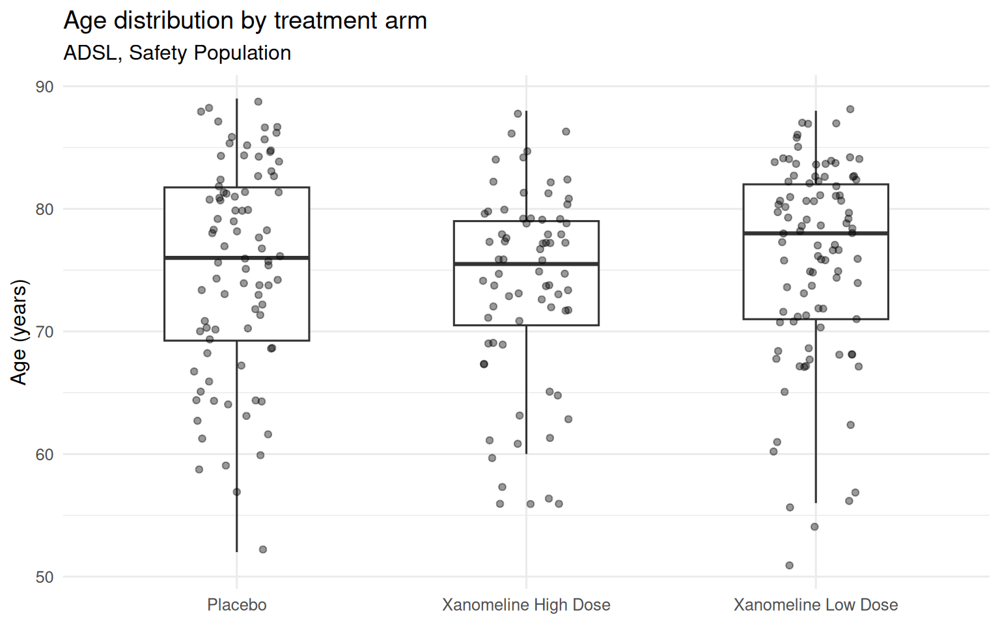
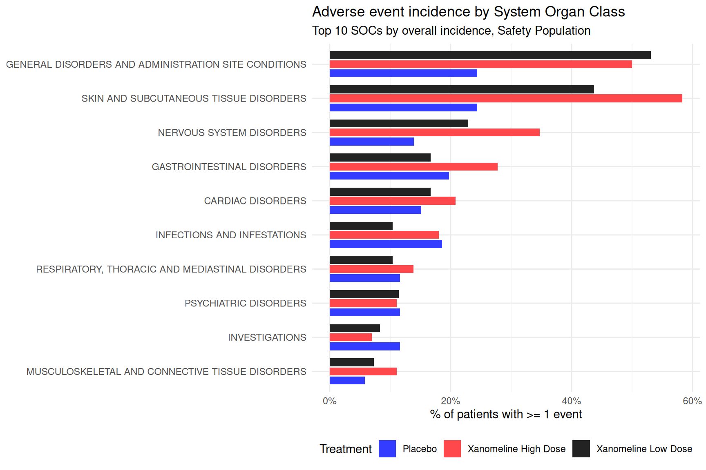

flowchart LR
RAW["Raw data (XPT)\nDM \u00b7 DS \u00b7 EC \u00b7 AE"]
SDTMDM["SDTM DM\n{sdtm.oak}"]
SDTMAE["SDTM AE\n{sdtm.oak}"]
ADSL["ADaM ADSL\n{admiral} {metacore}\n{metatools} {xportr}"]
ADAE["ADaM ADAE\n{admiral} {metacore}\n{metatools} {xportr}"]
DEMOTBL["Demographics table\n{rtables} {tern}"]
AETBL["Adverse events table\n{rtables} {tern}"]
PLOTS["Supporting plots\n{ggplot2}"]
OUT["Outputs\nXPT \u00b7 PDF \u00b7 PNG"]
RAW --> SDTMDM --> ADSL
RAW --> SDTMAE --> ADAE
ADSL --> ADAE
ADSL --> DEMOTBL
ADSL --> AETBL
ADAE --> AETBL
ADSL --> PLOTS
ADAE --> PLOTS
DEMOTBL --> OUT
AETBL --> OUT
PLOTS --> OUT
style RAW fill:#d6eaf8,stroke:#2e86c1,color:#000
style SDTMDM fill:#2e86c1,stroke:#1a5276,color:#fff
style SDTMAE fill:#2e86c1,stroke:#1a5276,color:#fff
style ADSL fill:#2e86c1,stroke:#1a5276,color:#fff
style ADAE fill:#2e86c1,stroke:#1a5276,color:#fff
style DEMOTBL fill:#1e8449,stroke:#145a32,color:#fff
style AETBL fill:#1e8449,stroke:#145a32,color:#fff
style PLOTS fill:#1e8449,stroke:#145a32,color:#fff
style OUT fill:#d5f5e3,stroke:#1e8449,color:#000
pharmaverse raw-to-ADaM-to-TLG pipeline
Note
This report was generated using AI under general human direction. At the time of generation, the contents have not been comprehensively reviewed by a human analyst.
Overview
This report ties together an end-to-end clinical reporting pipeline, adapted from the pharmaverse examples site, scoped to a core slice: the Demographics (DM) and Adverse Events (AE) domains, from raw data through SDTM, ADaM (ADSL/ADAE), and two TLG (Tables, Listings, Graphs) outputs.
Every code cell below is shown by default and can be individually collapsed (click “Hide”), or all cells can be shown/hidden at once via the “Code” menu in the top right of the page.
Data flow
Each stage below mirrors a numbered script under scripts/ in the project (01_sdtm_dm.R through 08_tlg_plots.R); this report re-runs that same logic end to end so the tables, plots, and narrative stay in sync with the underlying pipeline.
Scope
- SDTM:
DMandAEdomains only, mapped from raw data with{sdtm.oak}. - ADaM:
ADSLandADAE, built with{admiral},{metacore},{metatools}, and{xportr}(including eSub XPT export).ADSLuses the{pharmaversesdtm}DM/DS/EX/AE/VS/SUPPDMdomains directly, since it needsDS/EX/VS/SUPPDMinputs that are outside the raw-to-SDTM scope above. - TLG: a Demographics table and an Adverse Events table (
{rtables}/{tern}), exported to PDF, plus two supporting{ggplot2}plots. The Adverse Events table and its companion plot use the{pharmaverseadam}referenceADAE, because the abbreviated spec file used for theADAEderivation here doesn’t carry the full MedDRA hierarchy variables (AEBODSYS/AEDECOD/etc.) that table needs – this mirrors how the pharmaverse examples site itself sources data for its TLG articles.
Setup
Code
library(sdtm.oak)
library(haven)
library(dplyr)
Attaching package: 'dplyr'The following objects are masked from 'package:stats':
filter, lagThe following objects are masked from 'package:base':
intersect, setdiff, setequal, unionCode
library(tidyr)
library(lubridate)
Attaching package: 'lubridate'The following objects are masked from 'package:base':
date, intersect, setdiff, unionCode
library(stringr)
library(metacore)Attaching package `metacore`
As of metacore 0.3.0 the `keep` variable in the `ds_vars` table has been renamed to `mandatory`. Please see release documentation for details.Code
library(metatools)
library(admiral)
library(xportr)
library(pharmaversesdtm)
library(pharmaverseadam)
library(rtables)Loading required package: formatters
Attaching package: 'formatters'The following object is masked from 'package:base':
%||%Loading required package: magrittr
Attaching package: 'magrittr'The following object is masked from 'package:tidyr':
extract
Attaching package: 'rtables'The following object is masked from 'package:utils':
strCode
library(tern)Registered S3 method overwritten by 'tern':
method from
tidy.glm broomCode
library(ggplot2)
library(scales)Raw datasets are read from local SAS transport (XPT) files under input_data/ (originally exported from {pharmaverseraw}; see scripts/00_export_raw_to_xpt.R). Because XPT variable names can’t contain “.”, the IT. item-prefix used throughout these raw datasets (e.g. IT.AGE) was saved as IT_ and is restored here on read-in. Controlled terminology and the ADaM {metacore} specification are read from metadata/.
Code
restore_it_prefix <- function(df) {
names(df) <- sub("^IT_", "IT.", names(df))
df
}
dm_raw <- restore_it_prefix(read_xpt("input_data/dm_raw.xpt"))
ds_raw <- restore_it_prefix(read_xpt("input_data/ds_raw.xpt"))
ec_raw <- restore_it_prefix(read_xpt("input_data/ec_raw.xpt"))
ae_raw <- restore_it_prefix(read_xpt("input_data/ae_raw.xpt"))
study_ct <- read.csv("metadata/sdtm_ct.csv")SDTM: mapping raw data
Demographics (DM)
{sdtm.oak} maps raw item-level columns to SDTM variables using oak_id_vars for traceability, assign_ct()/assign_no_ct() for variable-level mapping (with or without controlled terminology), and oak_cal_ref_dates() to derive reference dates such as RFSTDTC/RFXSTDTC from the raw exposure and disposition data.
Code
dm_raw <- dm_raw %>%
generate_oak_id_vars(pat_var = "PATNUM", raw_src = "dm_raw")
ds_raw <- ds_raw %>%
generate_oak_id_vars(pat_var = "PATNUM", raw_src = "ds_raw")
ec_raw <- ec_raw %>%
generate_oak_id_vars(pat_var = "PATNUM", raw_src = "ec_raw")Code
ref_date_conf_df <- tibble::tribble(
~raw_dataset_name, ~date_var, ~time_var, ~dformat, ~tformat, ~sdtm_var_name,
"ec_raw", "IT.ECSTDAT", NA_character_, "dd-mmm-yyyy", NA_character_, "RFXSTDTC",
"ec_raw", "IT.ECENDAT", NA_character_, "dd-mmm-yyyy", NA_character_, "RFXENDTC",
"ec_raw", "IT.ECSTDAT", NA_character_, "dd-mmm-yyyy", NA_character_, "RFSTDTC",
"ec_raw", "IT.ECENDAT", NA_character_, "dd-mmm-yyyy", NA_character_, "RFENDTC",
"dm_raw", "IC_DT", NA_character_, "mm/dd/yyyy", NA_character_, "RFICDTC",
"ds_raw", "DSDTCOL", "DSTMCOL", "mm-dd-yyyy", "H:M", "RFPENDTC",
"ds_raw", "DEATHDT", NA_character_, "mm/dd/yyyy", NA_character_, "DTHDTC"
)Code
# Topic variable
dm <- dm_raw %>%
mutate(SUBJID = substr(PATNUM, 5, 8)) %>%
select(oak_id, raw_source, patient_number, SUBJID)
# Qualifier / demographic variables
dm <- dm %>%
assign_no_ct(
raw_dat = dm_raw, raw_var = "IT.AGE", tgt_var = "AGE",
id_vars = oak_id_vars()
) %>%
hardcode_ct(
raw_dat = dm_raw, raw_var = "IT.AGE", tgt_var = "AGEU", tgt_val = "Year",
ct_spec = study_ct, ct_clst = "C66781", id_vars = oak_id_vars()
) %>%
assign_ct(
raw_dat = dm_raw, raw_var = "IT.SEX", tgt_var = "SEX",
ct_spec = study_ct, ct_clst = "C66731", id_vars = oak_id_vars()
) %>%
assign_ct(
raw_dat = dm_raw, raw_var = "IT.ETHNIC", tgt_var = "ETHNIC",
ct_spec = study_ct, ct_clst = "C66790", id_vars = oak_id_vars()
) %>%
assign_ct(
raw_dat = dm_raw, raw_var = "IT.RACE", tgt_var = "RACE",
ct_spec = study_ct, ct_clst = "C74457", id_vars = oak_id_vars()
) %>%
assign_ct(
raw_dat = dm_raw, raw_var = "PLANNED_ARM", tgt_var = "ARM",
ct_spec = study_ct, ct_clst = "ARM", id_vars = oak_id_vars()
) %>%
assign_no_ct(
raw_dat = dm_raw, raw_var = "PLANNED_ARMCD", tgt_var = "ARMCD",
id_vars = oak_id_vars()
) %>%
assign_ct(
raw_dat = dm_raw, raw_var = "ACTUAL_ARM", tgt_var = "ACTARM",
ct_spec = study_ct, ct_clst = "ARM", id_vars = oak_id_vars()
) %>%
assign_no_ct(
raw_dat = dm_raw, raw_var = "ACTUAL_ARMCD", tgt_var = "ACTARMCD",
id_vars = oak_id_vars()
)ℹ These terms could not be mapped per the controlled terminology: "Placebo" and "Screen Failure".
ℹ These terms could not be mapped per the controlled terminology: "Placebo" and "Screen Failure".Code
# Reference dates
raw_source_list <- list(ec_raw = ec_raw, ds_raw = ds_raw, dm_raw = dm_raw)
dm <- dm %>%
oak_cal_ref_dates(ds_in = ., der_var = "RFSTDTC", min_max = "min",
ref_date_config_df = ref_date_conf_df, raw_source = raw_source_list) %>%
oak_cal_ref_dates(ds_in = ., der_var = "RFENDTC", min_max = "max",
ref_date_config_df = ref_date_conf_df, raw_source = raw_source_list) %>%
oak_cal_ref_dates(ds_in = ., der_var = "RFXSTDTC", min_max = "min",
ref_date_config_df = ref_date_conf_df, raw_source = raw_source_list) %>%
oak_cal_ref_dates(ds_in = ., der_var = "RFXENDTC", min_max = "max",
ref_date_config_df = ref_date_conf_df, raw_source = raw_source_list) %>%
oak_cal_ref_dates(ds_in = ., der_var = "RFICDTC", min_max = "min",
ref_date_config_df = ref_date_conf_df, raw_source = raw_source_list) %>%
oak_cal_ref_dates(ds_in = ., der_var = "RFPENDTC", min_max = "max",
ref_date_config_df = ref_date_conf_df, raw_source = raw_source_list) %>%
oak_cal_ref_dates(ds_in = ., der_var = "DTHDTC", min_max = "min",
ref_date_config_df = ref_date_conf_df, raw_source = raw_source_list)
# SDTM identifiers and derived variables
dm <- dm %>%
mutate(
STUDYID = dm_raw$STUDY,
DOMAIN = "DM",
USUBJID = paste0("01-", dm_raw$PATNUM),
COUNTRY = dm_raw$COUNTRY,
DTHFL = dplyr::if_else(is.na(DTHDTC), NA_character_, "Y")
) %>%
assign_datetime(
raw_dat = dm_raw, raw_var = "COL_DT", tgt_var = "DMDTC",
raw_fmt = c("m/d/y"), id_vars = oak_id_vars()
) %>%
derive_study_day(
sdtm_in = ., dm_domain = ., tgdt = "DMDTC", refdt = "RFXSTDTC",
study_day_var = "DMDY"
)The derived SDTM DM domain has 306 subjects and 27 variables:
Code
dm %>%
select(USUBJID, AGE, SEX, RACE, ARM, ACTARM, RFSTDTC, RFXSTDTC) %>%
head(10)# A tibble: 10 × 8
USUBJID AGE SEX RACE ARM ACTARM RFSTDTC RFXSTDTC
<chr> <dbl> <chr> <chr> <chr> <chr> <iso86> <date>
1 01-701-1015 63 F WHITE PLACEBO PLACEBO 2014-0… 2014-01-02
2 01-701-1023 64 M WHITE PLACEBO PLACEBO 2012-0… 2012-08-05
3 01-701-1028 71 M WHITE Xanomeline High Dose Xanome… 2013-0… 2013-07-19
4 01-701-1033 74 M WHITE Xanomeline Low Dose Xanome… 2014-0… 2014-03-18
5 01-701-1034 77 F WHITE Xanomeline High Dose Xanome… 2014-0… 2014-07-01
6 01-701-1047 85 F WHITE PLACEBO PLACEBO 2013-0… 2013-02-12
7 01-701-1057 59 F WHITE SCREEN FAILURE SCREEN… NA … NA
8 01-701-1097 68 M WHITE Xanomeline Low Dose Xanome… 2014-0… 2014-01-01
9 01-701-1111 81 F WHITE Xanomeline Low Dose Xanome… 2012-0… 2012-09-07
10 01-701-1115 84 M WHITE Xanomeline Low Dose Xanome… 2012-1… 2012-11-30Adverse events (AE)
The AE domain follows the same pattern: AETERM is mapped as the topic variable, the remaining qualifier/timing variables are mapped with assign_ct()/assign_no_ct()/assign_datetime(), and derive_seq()/derive_study_day() add the sequence number and study day relative to RFXSTDTC/RFXENDTC from the DM domain built above.
Code
ae_raw <- ae_raw %>%
generate_oak_id_vars(pat_var = "PATNUM", raw_src = "ae_raw")
# Topic variable -- no tgt_dat/pipe input, so this creates the AE dataset from scratch
ae <- assign_no_ct(
raw_dat = ae_raw, raw_var = "IT.AETERM", tgt_var = "AETERM",
id_vars = oak_id_vars()
)
ae <- ae %>%
assign_ct(
raw_dat = ae_raw, raw_var = "AEOUTCOME", tgt_var = "AEOUT",
ct_spec = study_ct, ct_clst = "C66768", id_vars = oak_id_vars()
) %>%
assign_ct(
raw_dat = ae_raw, raw_var = "IT.AESEV", tgt_var = "AESEV",
ct_spec = study_ct, ct_clst = "C66769", id_vars = oak_id_vars()
) %>%
assign_ct(
raw_dat = ae_raw, raw_var = "IT.AESER", tgt_var = "AESER",
ct_spec = study_ct, ct_clst = "C66742", id_vars = oak_id_vars()
) %>%
assign_no_ct(
raw_dat = ae_raw, raw_var = "IT.AEACN", tgt_var = "AEACN",
id_vars = oak_id_vars()
) %>%
assign_ct(
raw_dat = ae_raw, raw_var = "IT.AEREL", tgt_var = "AEREL",
ct_spec = study_ct, ct_clst = "AEREL", id_vars = oak_id_vars()
) %>%
assign_ct(
raw_dat = ae_raw, raw_var = "AESCAN", tgt_var = "AESCAN",
ct_spec = study_ct, ct_clst = "C66742", id_vars = oak_id_vars()
) %>%
assign_ct(
raw_dat = ae_raw, raw_var = "AESCNO", tgt_var = "AESCONG",
ct_spec = study_ct, ct_clst = "C66742", id_vars = oak_id_vars()
) %>%
assign_ct(
raw_dat = ae_raw, raw_var = "AEDIS", tgt_var = "AESDISAB",
ct_spec = study_ct, ct_clst = "C66742", id_vars = oak_id_vars()
) %>%
assign_ct(
raw_dat = ae_raw, raw_var = "IT.AESDTH", tgt_var = "AESDTH",
ct_spec = study_ct, ct_clst = "C66742", id_vars = oak_id_vars()
) %>%
assign_ct(
raw_dat = ae_raw, raw_var = "IT.AESHOSP", tgt_var = "AESHOSP",
ct_spec = study_ct, ct_clst = "C66742", id_vars = oak_id_vars()
) %>%
assign_ct(
raw_dat = ae_raw, raw_var = "IT.AESLIFE", tgt_var = "AESLIFE",
ct_spec = study_ct, ct_clst = "C66742", id_vars = oak_id_vars()
) %>%
assign_ct(
raw_dat = ae_raw, raw_var = "AESOD", tgt_var = "AESOD",
ct_spec = study_ct, ct_clst = "C66742", id_vars = oak_id_vars()
) %>%
assign_datetime(
raw_dat = ae_raw, raw_var = "AEDTCOL", tgt_var = "AEDTC",
raw_fmt = c("m/d/y")
) %>%
assign_datetime(
raw_dat = ae_raw, raw_var = "IT.AESTDAT", tgt_var = "AESTDTC",
raw_fmt = c("m/d/y"), id_vars = oak_id_vars()
) %>%
assign_datetime(
raw_dat = ae_raw, raw_var = "IT.AEENDAT", tgt_var = "AEENDTC",
raw_fmt = c("m/d/y"), id_vars = oak_id_vars()
)
ae <- ae %>%
dplyr::mutate(
STUDYID = ae_raw$STUDY,
DOMAIN = "AE",
USUBJID = paste0("01-", ae_raw$PATNUM),
AELLT = ae_raw$AELLT,
AELLTCD = ae_raw$AELLTCD,
AEDECOD = ae_raw$AEDECOD,
AEPTCD = ae_raw$AEPTCD,
AEHLT = ae_raw$AEHLT,
AEHLTCD = ae_raw$AEHLTCD,
AEHLGT = ae_raw$AEHLGT,
AEHLGTCD = ae_raw$AEHLGTCD,
AEBODSYS = ae_raw$AEBODSYS,
AEBDSYCD = ae_raw$AEBDSYCD,
AESOC = ae_raw$AESOC,
AESOCCD = ae_raw$AESOCCD,
AETERM = toupper(AETERM)
) %>%
derive_seq(tgt_var = "AESEQ", rec_vars = c("USUBJID", "AETERM")) %>%
derive_study_day(
sdtm_in = ., dm_domain = dm, tgdt = "AESTDTC", refdt = "RFXSTDTC",
study_day_var = "AESTDY"
) %>%
derive_study_day(
sdtm_in = ., dm_domain = dm, tgdt = "AEENDTC", refdt = "RFXENDTC",
study_day_var = "AEENDY"
) %>%
select(
"STUDYID", "DOMAIN", "USUBJID", "AESEQ", "AETERM", "AELLT", "AELLTCD", "AEDECOD", "AEPTCD", "AEHLT", "AEHLTCD", "AEHLGT",
"AEHLGTCD", "AEBODSYS", "AEBDSYCD", "AESOC", "AESOCCD", "AESEV", "AESER", "AEACN", "AEREL", "AEOUT", "AESCAN", "AESCONG",
"AESDISAB", "AESDTH", "AESHOSP", "AESLIFE", "AESOD", "AEDTC", "AESTDTC", "AEENDTC", "AESTDY", "AEENDY"
)The derived SDTM AE domain has 1191 records across 225 subjects:
Code
ae %>%
select(USUBJID, AETERM, AEBODSYS, AESEV, AESTDTC, AEENDTC, AESTDY) %>%
head(10)# A tibble: 10 × 7
USUBJID AETERM AEBODSYS AESEV AESTDTC AEENDTC AESTDY
<chr> <chr> <chr> <chr> <date> <date> <int>
1 01-701-1015 APPLICATION SITE ERY… GENERAL… MILD 2014-01-03 NA 2
2 01-701-1015 APPLICATION SITE PRU… GENERAL… MILD 2014-01-03 NA 2
3 01-701-1015 DIARRHOEA GASTROI… MILD 2014-01-09 2014-01-11 8
4 01-701-1023 ATRIOVENTRICULAR BLO… CARDIAC… MILD 2012-08-26 NA 22
5 01-701-1023 ERYTHEMA SKIN AN… MILD 2012-08-07 2012-08-30 3
6 01-701-1023 ERYTHEMA SKIN AN… MODE… 2012-08-07 NA 3
7 01-701-1023 ERYTHEMA SKIN AN… MILD 2012-08-07 2012-08-30 3
8 01-701-1028 APPLICATION SITE ERY… GENERAL… MILD 2013-07-21 NA 3
9 01-701-1028 APPLICATION SITE PRU… GENERAL… MILD 2013-08-08 NA 21
10 01-701-1034 APPLICATION SITE PRU… GENERAL… MILD 2014-08-27 NA 58ADaM: building analysis datasets
ADSL (subject-level analysis dataset)
ADSL is built from the {pharmaversesdtm} DM/DS/EX/AE/VS/SUPPDM domains (since it needs DS/EX/VS/SUPPDM, not built in the SDTM section above). The {metacore} specification drives variable derivation and controlled terminology throughout via {metatools}, {admiral} supplies the clinical derivations (exposure dates, disposition, cause of death, …), and {xportr} applies the final type/length/label metadata before writing the submission-ready XPT file.
Code
dm_sdtm <- convert_blanks_to_na(pharmaversesdtm::dm)
ds_sdtm <- convert_blanks_to_na(pharmaversesdtm::ds)
ex_sdtm <- convert_blanks_to_na(pharmaversesdtm::ex)
ae_sdtm <- convert_blanks_to_na(pharmaversesdtm::ae)
vs_sdtm <- convert_blanks_to_na(pharmaversesdtm::vs)
suppdm_sdtm <- convert_blanks_to_na(pharmaversesdtm::suppdm)
dm_suppdm <- combine_supp(dm_sdtm, suppdm_sdtm)
metacore_obj <- suppressWarnings(
spec_to_metacore(path = "metadata/safety_specs.xlsx", where_sep_sheet = FALSE) %>%
select_dataset("ADSL")
)✔ Metadata successfully importedℹ To use the Metacore object with metatools package, first subset a dataset
using `metacore::select_dataset()`
✔ ADSL dataset successfully selectedCode
# Pull through SDTM columns per the spec
adsl_preds <- build_from_derived(
metacore_obj,
ds_list = list("dm" = dm_suppdm, "suppdm" = dm_suppdm),
predecessor_only = FALSE, keep = FALSE
)Not all datasets provided. Only variables from DM, SUPPDM will be gathered.Code
# Grouping variables: AGEGR1/AGEGR1N and RACEN
adsl_ct <- adsl_preds %>%
create_cat_var(metacore_obj, ref_var = AGE, grp_var = AGEGR1, num_grp_var = AGEGR1N) %>%
create_var_from_codelist(metacore = metacore_obj, input_var = RACE, out_var = RACEN)
# Exposure derivations
ex_ext <- ex_sdtm %>%
derive_vars_dtm(dtc = EXSTDTC, new_vars_prefix = "EXST") %>%
derive_vars_dtm(dtc = EXENDTC, new_vars_prefix = "EXEN", time_imputation = "last")
adsl_raw <- adsl_ct %>%
derive_vars_merged(
dataset_add = ex_ext,
filter_add = (EXDOSE > 0 |
(EXDOSE == 0 & str_detect(EXTRT, "PLACEBO"))) & !is.na(EXSTDTM),
new_vars = exprs(TRTSDTM = EXSTDTM, TRTSTMF = EXSTTMF),
order = exprs(EXSTDTM, EXSEQ),
mode = "first",
by_vars = exprs(STUDYID, USUBJID)
) %>%
derive_vars_merged(
dataset_add = ex_ext,
filter_add = (EXDOSE > 0 |
(EXDOSE == 0 & str_detect(EXTRT, "PLACEBO"))) & !is.na(EXENDTM),
new_vars = exprs(TRTEDTM = EXENDTM, TRTETMF = EXENTMF),
order = exprs(EXENDTM, EXSEQ),
mode = "last",
by_vars = exprs(STUDYID, USUBJID)
) %>%
derive_vars_dtm_to_dt(source_vars = exprs(TRTSDTM, TRTEDTM)) %>%
derive_vars_dtm_to_tm(source_vars = exprs(TRTSDTM)) %>%
derive_var_trtdurd() %>%
derive_var_merged_exist_flag(
dataset_add = ex_sdtm,
by_vars = exprs(STUDYID, USUBJID),
new_var = SAFFL,
false_value = "N",
missing_value = "N",
condition = (EXDOSE > 0 | (EXDOSE == 0 & str_detect(EXTRT, "PLACEBO")))
)
# Treatment variables
adsl <- adsl_raw %>%
mutate(
TRT01P = if_else(ARM %in% c("Screen Failure", "Not Assigned", "Not Treated"), "No Treatment", ARM),
TRT01A = if_else(ACTARM %in% c("Screen Failure", "Not Assigned", "Not Treated"), "No Treatment", ACTARM)
) %>%
create_var_from_codelist(metacore_obj, input_var = TRT01P, out_var = TRT01PN) %>%
create_var_from_codelist(metacore_obj, input_var = TRT01A, out_var = TRT01AN)
# Disposition variables
ds_ext <- derive_vars_dt(ds_sdtm, dtc = DSSTDTC, new_vars_prefix = "DSST")
adsl <- adsl %>%
derive_vars_merged(
dataset_add = ds_ext,
by_vars = exprs(STUDYID, USUBJID),
new_vars = exprs(EOSDT = DSSTDT),
filter_add = DSCAT == "DISPOSITION EVENT" & DSDECOD != "SCREEN FAILURE"
)
format_eosstt <- function(x) {
case_when(
x %in% c("COMPLETED") ~ "COMPLETED",
x %in% c("SCREEN FAILURE") ~ NA_character_,
TRUE ~ "DISCONTINUED"
)
}
adsl <- adsl %>%
derive_vars_merged(
dataset_add = ds_sdtm,
by_vars = exprs(STUDYID, USUBJID),
filter_add = DSCAT == "DISPOSITION EVENT",
new_vars = exprs(EOSSTT = format_eosstt(DSDECOD)),
missing_values = exprs(EOSSTT = "ONGOING")
) %>%
derive_vars_dt(
new_vars_prefix = "DTH",
dtc = DTHDTC,
highest_imputation = "M",
date_imputation = "first"
) %>%
derive_vars_merged(
dataset_add = ds_ext,
by_vars = exprs(STUDYID, USUBJID),
new_vars = exprs(RANDDT = DSSTDT),
filter_add = DSDECOD == "RANDOMIZED"
) %>%
derive_vars_merged(
dataset_add = ds_ext,
by_vars = exprs(STUDYID, USUBJID),
new_vars = exprs(SCRFDT = DSSTDT),
filter_add = DSCAT == "DISPOSITION EVENT" & DSDECOD == "SCREEN FAILURE"
) %>%
derive_vars_merged(
dataset_add = ds_ext,
by_vars = exprs(STUDYID, USUBJID),
new_vars = exprs(FRVDT = DSSTDT),
filter_add = DSCAT == "OTHER EVENT" & DSDECOD == "FINAL RETRIEVAL VISIT"
) %>%
derive_vars_duration(new_var = DTHADY, start_date = TRTSDT, end_date = DTHDT) %>%
derive_vars_duration(new_var = LDDTHELD, start_date = TRTEDT, end_date = DTHDT, add_one = FALSE)
assign_randfl <- function(x) if_else(!is.na(x), "Y", NA_character_)
adsl <- adsl %>% mutate(RANDFL = assign_randfl(RANDDT))
# Cause of death
adsl <- adsl %>%
derive_vars_extreme_event(
by_vars = exprs(STUDYID, USUBJID),
events = list(
event(
dataset_name = "ae",
condition = AEOUT == "FATAL",
set_values_to = exprs(DTHCAUS = AEDECOD, DTHDOM = "AE"),
),
event(
dataset_name = "ds",
condition = DSDECOD == "DEATH" & grepl("DEATH DUE TO", DSTERM),
set_values_to = exprs(DTHCAUS = DSTERM, DTHDOM = "DS"),
)
),
source_datasets = list(ae = ae_sdtm, ds = ds_sdtm),
tmp_event_nr_var = event_nr,
order = exprs(event_nr),
mode = "first",
new_vars = exprs(DTHCAUS, DTHDOM)
)Code
dir.create("output", showWarnings = FALSE)
adsl_final <- adsl %>%
drop_unspec_vars(metacore_obj) %>%
check_variables(metacore_obj) %>%
check_ct_data(metacore_obj, na_acceptable = TRUE) %>%
order_cols(metacore_obj) %>%
sort_by_key(metacore_obj) %>%
xportr_type(metacore_obj, domain = "ADSL") %>%
xportr_length(metacore_obj) %>%
xportr_label(metacore_obj) %>%
xportr_df_label(metacore_obj)Warning: There was 1 warning in `dplyr::filter()`.
ℹ In argument: `variable %in% names(data)`.
Caused by warning:
! In: [check_variables(., metacore_obj)]
The following variables are missing: REGION1, REGION1N, RACEGR1, RACEGR1N,
DTHCGR1, DTHCGR1N✔ All controlled terminology checks passed
── Variable type mismatches found. ──
✔ 1 variable coerced
── Variables in metadata not found in dataset. ──
✔ 6 metadata variables skipped
── Variables in metadata not found in dataset. ──
✔ 6 metadata variables skippedCode
xportr_write(adsl_final, "output/adsl.xpt", metadata = metacore_obj, domain = "ADSL")ADSL has 306 subjects and 45 variables:
Code
adsl_final %>%
select(USUBJID, AGE, AGEGR1, SEX, RACE, ARM, ACTARM, TRT01A, SAFFL, TRTSDT, TRTEDT) %>%
head(10)# A tibble: 10 × 11
USUBJID AGE AGEGR1 SEX RACE ARM ACTARM TRT01A SAFFL TRTSDT
<chr> <dbl> <chr> <chr> <chr> <chr> <chr> <chr> <chr> <date>
1 01-701-1015 63 18-64 F WHITE Placebo Place… Place… Y 2014-01-02
2 01-701-1023 64 18-64 M WHITE Placebo Place… Place… Y 2012-08-05
3 01-701-1028 71 >64 M WHITE Xanomeli… Xanom… Xanom… Y 2013-07-19
4 01-701-1033 74 >64 M WHITE Xanomeli… Xanom… Xanom… Y 2014-03-18
5 01-701-1034 77 >64 F WHITE Xanomeli… Xanom… Xanom… Y 2014-07-01
6 01-701-1047 85 >64 F WHITE Placebo Place… Place… Y 2013-02-12
7 01-701-1057 59 18-64 F WHITE Screen F… Scree… No Tr… N NA
8 01-701-1097 68 >64 M WHITE Xanomeli… Xanom… Xanom… Y 2014-01-01
9 01-701-1111 81 >64 F WHITE Xanomeli… Xanom… Xanom… Y 2012-09-07
10 01-701-1115 84 >64 M WHITE Xanomeli… Xanom… Xanom… Y 2012-11-30
# ℹ 1 more variable: TRTEDT <date>ADAE (adverse events analysis dataset)
ADAE starts from the SDTM AE domain, merges key ADSL dates, derives analysis dates/durations, flags (treatment-emergent, on-treatment, first-occurrence-of-worst-severity), and query variables (SMQs/CQs), and finally applies the same metadata/eSub steps as ADSL.
Code
adsl_for_ae <- adsl_final
adsl_vars <- exprs(TRTSDT, TRTEDT, DTHDT)
adae <- ae_sdtm %>%
derive_vars_merged(
dataset_add = adsl_for_ae,
new_vars = adsl_vars,
by_vars = exprs(STUDYID, USUBJID)
)
# Analysis dates and relative day
adae <- adae %>%
derive_vars_dt(
new_vars_prefix = "AEN",
dtc = AEENDTC,
date_imputation = "last",
highest_imputation = "M",
flag_imputation = "auto"
) %>%
derive_vars_dt(
new_vars_prefix = "AST",
dtc = AESTDTC,
highest_imputation = "M",
flag_imputation = "auto",
min_dates = exprs(TRTSDT),
max_dates = exprs(AENDT)
) %>%
derive_vars_dy(
reference_date = TRTSDT,
source_vars = exprs(ASTDT, AENDT)
)
# Duration
adae <- adae %>%
derive_vars_duration(
new_var = ADURN,
new_var_unit = ADURU,
start_date = ASTDT,
end_date = AENDT
)
# Date of last dose before each AE
ex_sdtm <- ex_sdtm %>% derive_vars_dt(dtc = EXENDTC, new_vars_prefix = "EXEN")
adae <- adae %>%
derive_vars_joined(
dataset_add = ex_sdtm,
by_vars = exprs(STUDYID, USUBJID),
order = exprs(EXENDT),
new_vars = exprs(LDOSEDT = EXENDT),
join_vars = exprs(EXENDT),
join_type = "all",
filter_add = (EXDOSE > 0 | (EXDOSE == 0 & str_detect(EXTRT, "PLACEBO"))) & !is.na(EXENDT),
filter_join = EXENDT <= ASTDT,
mode = "last"
)
# Analysis flags
adae <- adae %>%
derive_var_trtemfl(
start_date = ASTDT,
end_date = AENDT,
trt_start_date = TRTSDT,
trt_end_date = TRTEDT
) %>%
derive_var_ontrtfl(
start_date = ASTDT,
ref_start_date = TRTSDT,
ref_end_date = TRTEDT,
ref_end_window = 30
)
# Occurrence flag: first occurrence of worst severity per patient
adae <- adae %>%
mutate(TEMP_AESEVN = as.integer(factor(AESEV, levels = c("SEVERE", "MODERATE", "MILD")))) %>%
derive_var_extreme_flag(
new_var = AOCCIFL,
by_vars = exprs(STUDYID, USUBJID),
order = exprs(TEMP_AESEVN, ASTDT, AESEQ),
mode = "first"
) %>%
select(-TEMP_AESEVN)
# Query variables (SMQs/CQs)
queries <- admiral::queries %>% filter(PREFIX %in% c("CQ01", "SMQ02"))
adae <- adae %>%
derive_vars_query(dataset_queries = queries)
# Remaining ADSL variables
adae <- adae %>%
derive_vars_merged(
dataset_add = select(adsl_for_ae, !!!negate_vars(adsl_vars)),
by_vars = exprs(STUDYID, USUBJID)
)Code
metacore_obj <- suppressWarnings(
spec_to_metacore(path = "metadata/safety_specs.xlsx", where_sep_sheet = FALSE) %>%
select_dataset("ADAE")
)✔ Metadata successfully importedℹ To use the Metacore object with metatools package, first subset a dataset
using `metacore::select_dataset()`
✔ ADAE dataset successfully selectedCode
adae_final <- adae %>%
drop_unspec_vars(metacore_obj) %>%
check_variables(metacore_obj) %>%
check_ct_data(metacore_obj, na_acceptable = TRUE) %>%
order_cols(metacore_obj) %>%
sort_by_key(metacore_obj) %>%
xportr_type(metacore_obj, domain = "ADAE") %>%
xportr_length(metacore_obj) %>%
xportr_label(metacore_obj) %>%
xportr_df_label(metacore_obj)The following variable(s) were dropped:
DOMAIN
AESPID
AELLT
AELLTCD
AEPTCD
AEHLT
AEHLTCD
AEHLGT
AEHLGTCD
AEBODSYS
AEBDSYCD
AESOC
AESOCCD
AESCAN
AESCONG
AESDISAB
AESDTH
AESHOSP
AESLIFE
AESOD
AEDTC
AESTDY
AEENDY
SMQ02CD
SMQ02SC
SMQ02SCN
AGEGR1
AGEGR1N
ITTFL
RACEN
RANDFL
RANDDT
ARM
ARMCD
ACTARMCD
TRT01PN
TRT01AN
TRTSTM
TRTSTMF
TRTEDTM
TRTETMF
TRTDURD
DTHDTC
DTHDTF
DTHFL
DTHADY
LDDTHELD
DTHCAUS
DTHDOM
SCRFDT
EOSDT
EOSSTT
FRVDTWarning: There was 1 warning in `dplyr::filter()`.
ℹ In argument: `variable %in% names(data)`.
Caused by warning:
! In: [check_variables(., metacore_obj)]
The following variables are missing: REGION1✔ All controlled terminology checks passed
── Variables in metadata not found in dataset. ──
✔ 1 metadata variables skipped
── Variables in metadata not found in dataset. ──
✔ 1 metadata variables skippedCode
xportr_write(adae_final, "output/adae.xpt", metadata = metacore_obj, domain = "ADAE")ADAE has 1191 adverse event records:
Code
adae_final %>%
select(USUBJID, ASTDT, AENDT, ADURN, TRTEMFL, ONTRTFL, AOCCIFL) %>%
head(10)# A tibble: 10 × 7
USUBJID ASTDT AENDT ADURN TRTEMFL ONTRTFL AOCCIFL
<chr> <date> <date> <dbl> <chr> <chr> <chr>
1 01-701-1015 2014-01-03 NA NA Y Y Y
2 01-701-1015 2014-01-03 NA NA Y Y <NA>
3 01-701-1015 2014-01-09 2014-01-11 3 Y Y <NA>
4 01-701-1023 2012-08-07 2012-08-30 24 Y Y <NA>
5 01-701-1023 2012-08-07 NA NA Y Y Y
6 01-701-1023 2012-08-07 2012-08-30 24 Y Y <NA>
7 01-701-1023 2012-08-26 NA NA Y Y <NA>
8 01-701-1028 2013-07-21 NA NA Y Y Y
9 01-701-1028 2013-08-08 NA NA Y Y <NA>
10 01-701-1034 2014-08-27 NA NA Y Y Y TLG: tables
Demographics table
Built with {rtables}/{tern} from ADSL: age (continuous summary), age group, sex, and race, split by actual treatment arm with an overall column.
Code
adsl_demo <- adsl_final %>%
filter(!ACTARM %in% "Screen Failure") %>%
mutate(
AGEGR1 = case_when(
between(AGE, 18, 40) ~ "18-40",
between(AGE, 41, 64) ~ "41-64",
AGE > 64 ~ ">=65"
) %>%
factor(levels = c("18-40", "41-64", ">=65"))
) %>%
df_explicit_na()
demo_vars <- c("AGE", "AGEGR1", "SEX", "RACE")
demo_var_labels <- c("Age (yr)", "Age group", "Sex", "Race")
lyt_demo <- basic_table(show_colcounts = TRUE) %>%
split_cols_by(var = "ACTARM") %>%
add_overall_col("All Patients") %>%
analyze_vars(vars = demo_vars, var_labels = demo_var_labels)
demographic_table <- build_table(lyt_demo, adsl_demo)
demographic_table Placebo Xanomeline High Dose Xanomeline Low Dose All Patients
(N=86) (N=72) (N=96) (N=254)
————————————————————————————————————————————————————————————————————————————————————————————————————————————
Age (yr)
n 86 72 96 254
Mean (SD) 75.2 (8.6) 73.8 (7.9) 76.0 (8.1) 75.1 (8.2)
Median 76.0 75.5 78.0 77.0
Min - Max 52.0 - 89.0 56.0 - 88.0 51.0 - 88.0 51.0 - 89.0
Age group
n 86 72 96 254
18-40 0 0 0 0
41-64 14 (16.3%) 11 (15.3%) 8 (8.3%) 33 (13%)
>=65 72 (83.7%) 61 (84.7%) 88 (91.7%) 221 (87%)
Sex
n 86 72 96 254
F 53 (61.6%) 35 (48.6%) 55 (57.3%) 143 (56.3%)
M 33 (38.4%) 37 (51.4%) 41 (42.7%) 111 (43.7%)
Race
n 86 72 96 254
AMERICAN INDIAN OR ALASKA NATIVE 0 1 (1.4%) 0 1 (0.4%)
BLACK OR AFRICAN AMERICAN 8 (9.3%) 9 (12.5%) 6 (6.2%) 23 (9.1%)
WHITE 78 (90.7%) 62 (86.1%) 90 (93.8%) 230 (90.6%) Code
export_as_pdf(
demographic_table,
file = "output/demographic_table.pdf",
page_type = "letter",
landscape = TRUE,
font_size = 9,
margins = c(2, 2, 2, 2)
)$file
[1] "output/demographic_table.pdf"
$npages
[1] 1
$exceeds_width
[1] FALSE
$exceeds_height
[1] FALSE
$lpp
[1] 42
$cpp
[1] 132Adverse events table
Built with {rtables}/{tern} from {pharmaverseadam}’s ADSL/ADAE (see Scope above): total patients/events overall, then by System Organ Class (AEBODSYS) and Preferred Term (AEDECOD), restricted to the safety population.
Code
adsl_pkg <- pharmaverseadam::adsl %>% df_explicit_na()
adae_pkg <- pharmaverseadam::adae %>%
var_relabel(
AEBODSYS = "MedDRA System Organ Class",
AEDECOD = "MedDRA Preferred Term"
) %>%
filter(SAFFL == "Y") %>%
df_explicit_na()
lyt_ae <- basic_table(show_colcounts = TRUE) %>%
split_cols_by(var = "ACTARM") %>%
add_overall_col(label = "All Patients") %>%
analyze_num_patients(
vars = "USUBJID",
.stats = c("unique", "nonunique"),
.labels = c(
unique = "Total number of patients with at least one adverse event",
nonunique = "Overall total number of events"
)
) %>%
split_rows_by(
"AEBODSYS",
child_labels = "visible",
nested = FALSE,
split_fun = drop_split_levels,
label_pos = "topleft",
split_label = obj_label(adae_pkg$AEBODSYS)
) %>%
summarize_num_patients(
var = "USUBJID",
.stats = c("unique", "nonunique"),
.labels = c(
unique = "Total number of patients with at least one adverse event",
nonunique = "Total number of events"
)
) %>%
count_occurrences(
vars = "AEDECOD",
.indent_mods = -1L
) %>%
append_varlabels(adae_pkg, "AEDECOD", indent = 1L)
adverse_events_table <- build_table(lyt_ae, df = adae_pkg, alt_counts_df = adsl_pkg)
adverse_events_tableMedDRA System Organ Class Placebo Xanomeline High Dose Xanomeline Low Dose All Patients
MedDRA Preferred Term (N=86) (N=72) (N=96) (N=306)
————————————————————————————————————————————————————————————————————————————————————————————————————————————————————————————————————————————
Total number of patients with at least one adverse event 69 (80.2%) 70 (97.2%) 86 (89.6%) 225 (73.5%)
Overall total number of events 301 436 454 1191
CARDIAC DISORDERS
Total number of patients with at least one adverse event 13 (15.1%) 15 (20.8%) 16 (16.7%) 44 (14.4%)
Total number of events 27 30 34 91
ATRIAL FIBRILLATION 1 (1.2%) 2 (2.8%) 2 (2.1%) 5 (1.6%)
ATRIAL FLUTTER 0 1 (1.4%) 1 (1.0%) 2 (0.7%)
ATRIAL HYPERTROPHY 1 (1.2%) 0 0 1 (0.3%)
ATRIOVENTRICULAR BLOCK FIRST DEGREE 1 (1.2%) 0 1 (1.0%) 2 (0.7%)
ATRIOVENTRICULAR BLOCK SECOND DEGREE 2 (2.3%) 1 (1.4%) 2 (2.1%) 5 (1.6%)
BRADYCARDIA 1 (1.2%) 0 0 1 (0.3%)
BUNDLE BRANCH BLOCK LEFT 1 (1.2%) 0 0 1 (0.3%)
BUNDLE BRANCH BLOCK RIGHT 1 (1.2%) 0 1 (1.0%) 2 (0.7%)
CARDIAC DISORDER 0 1 (1.4%) 0 1 (0.3%)
CARDIAC FAILURE CONGESTIVE 1 (1.2%) 0 0 1 (0.3%)
MYOCARDIAL INFARCTION 4 (4.7%) 4 (5.6%) 2 (2.1%) 10 (3.3%)
PALPITATIONS 0 0 2 (2.1%) 2 (0.7%)
SINUS ARRHYTHMIA 1 (1.2%) 0 0 1 (0.3%)
SINUS BRADYCARDIA 2 (2.3%) 8 (11.1%) 7 (7.3%) 17 (5.6%)
SUPRAVENTRICULAR EXTRASYSTOLES 1 (1.2%) 1 (1.4%) 1 (1.0%) 3 (1.0%)
SUPRAVENTRICULAR TACHYCARDIA 0 0 1 (1.0%) 1 (0.3%)
TACHYCARDIA 1 (1.2%) 0 0 1 (0.3%)
VENTRICULAR EXTRASYSTOLES 0 1 (1.4%) 2 (2.1%) 3 (1.0%)
VENTRICULAR HYPERTROPHY 1 (1.2%) 0 0 1 (0.3%)
WOLFF-PARKINSON-WHITE SYNDROME 0 0 1 (1.0%) 1 (0.3%)
CONGENITAL, FAMILIAL AND GENETIC DISORDERS
Total number of patients with at least one adverse event 0 2 (2.8%) 1 (1.0%) 3 (1.0%)
Total number of events 0 2 1 3
VENTRICULAR SEPTAL DEFECT 0 2 (2.8%) 1 (1.0%) 3 (1.0%)
EAR AND LABYRINTH DISORDERS
Total number of patients with at least one adverse event 1 (1.2%) 1 (1.4%) 2 (2.1%) 4 (1.3%)
Total number of events 2 1 3 6
CERUMEN IMPACTION 0 0 1 (1.0%) 1 (0.3%)
EAR PAIN 1 (1.2%) 0 0 1 (0.3%)
TINNITUS 0 0 1 (1.0%) 1 (0.3%)
VERTIGO 0 1 (1.4%) 1 (1.0%) 2 (0.7%)
EYE DISORDERS
Total number of patients with at least one adverse event 4 (4.7%) 1 (1.4%) 2 (2.1%) 7 (2.3%)
Total number of events 8 2 2 12
CONJUNCTIVAL HAEMORRHAGE 0 0 1 (1.0%) 1 (0.3%)
CONJUNCTIVITIS 2 (2.3%) 0 0 2 (0.7%)
EYE ALLERGY 1 (1.2%) 0 0 1 (0.3%)
EYE PRURITUS 1 (1.2%) 0 0 1 (0.3%)
EYE SWELLING 1 (1.2%) 0 0 1 (0.3%)
GLAUCOMA 1 (1.2%) 0 0 1 (0.3%)
VISION BLURRED 0 1 (1.4%) 1 (1.0%) 2 (0.7%)
GASTROINTESTINAL DISORDERS
Total number of patients with at least one adverse event 17 (19.8%) 20 (27.8%) 16 (16.7%) 53 (17.3%)
Total number of events 26 35 26 87
ABDOMINAL DISCOMFORT 0 1 (1.4%) 0 1 (0.3%)
ABDOMINAL PAIN 1 (1.2%) 1 (1.4%) 3 (3.1%) 5 (1.6%)
CONSTIPATION 1 (1.2%) 0 0 1 (0.3%)
DIARRHOEA 9 (10.5%) 3 (4.2%) 6 (6.2%) 18 (5.9%)
DYSPEPSIA 1 (1.2%) 1 (1.4%) 1 (1.0%) 3 (1.0%)
DYSPHAGIA 0 0 1 (1.0%) 1 (0.3%)
FLATULENCE 1 (1.2%) 0 0 1 (0.3%)
GASTROINTESTINAL HAEMORRHAGE 0 1 (1.4%) 0 1 (0.3%)
GASTROOESOPHAGEAL REFLUX DISEASE 1 (1.2%) 0 0 1 (0.3%)
GLOSSITIS 1 (1.2%) 0 0 1 (0.3%)
HIATUS HERNIA 1 (1.2%) 0 0 1 (0.3%)
NAUSEA 3 (3.5%) 6 (8.3%) 3 (3.1%) 12 (3.9%)
RECTAL HAEMORRHAGE 0 0 1 (1.0%) 1 (0.3%)
SALIVARY HYPERSECRETION 0 4 (5.6%) 0 4 (1.3%)
STOMACH DISCOMFORT 0 1 (1.4%) 0 1 (0.3%)
VOMITING 3 (3.5%) 6 (8.3%) 4 (4.2%) 13 (4.2%)
GENERAL DISORDERS AND ADMINISTRATION SITE CONDITIONS
Total number of patients with at least one adverse event 21 (24.4%) 36 (50.0%) 51 (53.1%) 108 (35.3%)
Total number of events 48 118 126 292
APPLICATION SITE BLEEDING 0 0 1 (1.0%) 1 (0.3%)
APPLICATION SITE DERMATITIS 5 (5.8%) 7 (9.7%) 9 (9.4%) 21 (6.9%)
APPLICATION SITE DESQUAMATION 0 0 1 (1.0%) 1 (0.3%)
APPLICATION SITE DISCHARGE 0 1 (1.4%) 0 1 (0.3%)
APPLICATION SITE DISCOLOURATION 0 0 1 (1.0%) 1 (0.3%)
APPLICATION SITE ERYTHEMA 3 (3.5%) 14 (19.4%) 13 (13.5%) 30 (9.8%)
APPLICATION SITE INDURATION 1 (1.2%) 0 0 1 (0.3%)
APPLICATION SITE IRRITATION 3 (3.5%) 9 (12.5%) 9 (9.4%) 21 (6.9%)
APPLICATION SITE PAIN 0 2 (2.8%) 0 2 (0.7%)
APPLICATION SITE PERSPIRATION 0 2 (2.8%) 0 2 (0.7%)
APPLICATION SITE PRURITUS 6 (7.0%) 21 (29.2%) 23 (24.0%) 50 (16.3%)
APPLICATION SITE REACTION 1 (1.2%) 1 (1.4%) 0 2 (0.7%)
APPLICATION SITE SWELLING 0 2 (2.8%) 1 (1.0%) 3 (1.0%)
APPLICATION SITE URTICARIA 0 1 (1.4%) 2 (2.1%) 3 (1.0%)
APPLICATION SITE VESICLES 1 (1.2%) 5 (6.9%) 5 (5.2%) 11 (3.6%)
APPLICATION SITE WARMTH 0 0 1 (1.0%) 1 (0.3%)
ASTHENIA 1 (1.2%) 0 1 (1.0%) 2 (0.7%)
CHEST DISCOMFORT 0 1 (1.4%) 1 (1.0%) 2 (0.7%)
CHEST PAIN 0 2 (2.8%) 0 2 (0.7%)
CHILLS 1 (1.2%) 1 (1.4%) 1 (1.0%) 3 (1.0%)
CYST 0 0 1 (1.0%) 1 (0.3%)
FATIGUE 1 (1.2%) 5 (6.9%) 5 (5.2%) 11 (3.6%)
FEELING ABNORMAL 0 1 (1.4%) 0 1 (0.3%)
FEELING COLD 0 1 (1.4%) 0 1 (0.3%)
INFLAMMATION 0 0 1 (1.0%) 1 (0.3%)
MALAISE 0 2 (2.8%) 1 (1.0%) 3 (1.0%)
OEDEMA 0 0 2 (2.1%) 2 (0.7%)
OEDEMA PERIPHERAL 2 (2.3%) 2 (2.8%) 1 (1.0%) 5 (1.6%)
PAIN 0 1 (1.4%) 1 (1.0%) 2 (0.7%)
PYREXIA 2 (2.3%) 0 1 (1.0%) 3 (1.0%)
SECRETION DISCHARGE 0 0 1 (1.0%) 1 (0.3%)
SUDDEN DEATH 0 0 1 (1.0%) 1 (0.3%)
SWELLING 0 0 1 (1.0%) 1 (0.3%)
ULCER 0 0 1 (1.0%) 1 (0.3%)
HEPATOBILIARY DISORDERS
Total number of patients with at least one adverse event 1 (1.2%) 0 0 1 (0.3%)
Total number of events 1 0 0 1
HYPERBILIRUBINAEMIA 1 (1.2%) 0 0 1 (0.3%)
IMMUNE SYSTEM DISORDERS
Total number of patients with at least one adverse event 0 1 (1.4%) 1 (1.0%) 2 (0.7%)
Total number of events 0 1 2 3
HYPERSENSITIVITY 0 0 1 (1.0%) 1 (0.3%)
SEASONAL ALLERGY 0 1 (1.4%) 0 1 (0.3%)
INFECTIONS AND INFESTATIONS
Total number of patients with at least one adverse event 16 (18.6%) 13 (18.1%) 10 (10.4%) 39 (12.7%)
Total number of events 35 20 18 73
BRONCHITIS 1 (1.2%) 0 0 1 (0.3%)
CELLULITIS 0 0 1 (1.0%) 1 (0.3%)
CERVICITIS 1 (1.2%) 0 0 1 (0.3%)
CYSTITIS 1 (1.2%) 1 (1.4%) 0 2 (0.7%)
EAR INFECTION 2 (2.3%) 0 0 2 (0.7%)
GASTROENTERITIS VIRAL 1 (1.2%) 0 0 1 (0.3%)
HORDEOLUM 0 1 (1.4%) 0 1 (0.3%)
INFLUENZA 1 (1.2%) 1 (1.4%) 1 (1.0%) 3 (1.0%)
LOCALISED INFECTION 1 (1.2%) 0 1 (1.0%) 2 (0.7%)
LOWER RESPIRATORY TRACT INFECTION 0 1 (1.4%) 0 1 (0.3%)
NASOPHARYNGITIS 2 (2.3%) 6 (8.3%) 4 (4.2%) 12 (3.9%)
ONYCHOMYCOSIS 0 0 1 (1.0%) 1 (0.3%)
PNEUMONIA 0 0 1 (1.0%) 1 (0.3%)
RHINITIS 0 1 (1.4%) 0 1 (0.3%)
UPPER RESPIRATORY TRACT INFECTION 6 (7.0%) 3 (4.2%) 1 (1.0%) 10 (3.3%)
URINARY TRACT INFECTION 2 (2.3%) 1 (1.4%) 0 3 (1.0%)
VAGINAL MYCOSIS 1 (1.2%) 0 0 1 (0.3%)
VIRAL INFECTION 0 0 1 (1.0%) 1 (0.3%)
INJURY, POISONING AND PROCEDURAL COMPLICATIONS
Total number of patients with at least one adverse event 4 (4.7%) 5 (6.9%) 5 (5.2%) 14 (4.6%)
Total number of events 9 8 12 29
CONTUSION 1 (1.2%) 2 (2.8%) 1 (1.0%) 4 (1.3%)
EXCORIATION 2 (2.3%) 1 (1.4%) 1 (1.0%) 4 (1.3%)
FACIAL BONES FRACTURE 0 1 (1.4%) 0 1 (0.3%)
FALL 1 (1.2%) 1 (1.4%) 2 (2.1%) 4 (1.3%)
HIP FRACTURE 1 (1.2%) 2 (2.8%) 0 3 (1.0%)
JOINT DISLOCATION 0 0 1 (1.0%) 1 (0.3%)
SKIN LACERATION 1 (1.2%) 0 2 (2.1%) 3 (1.0%)
WOUND 0 0 1 (1.0%) 1 (0.3%)
INVESTIGATIONS
Total number of patients with at least one adverse event 10 (11.6%) 5 (6.9%) 8 (8.3%) 23 (7.5%)
Total number of events 19 6 15 40
BIOPSY 0 1 (1.4%) 0 1 (0.3%)
BIOPSY PROSTATE 0 1 (1.4%) 0 1 (0.3%)
BLOOD ALKALINE PHOSPHATASE INCREASED 1 (1.2%) 0 0 1 (0.3%)
BLOOD CHOLESTEROL INCREASED 0 1 (1.4%) 0 1 (0.3%)
BLOOD CREATINE PHOSPHOKINASE INCREASED 1 (1.2%) 0 0 1 (0.3%)
BLOOD GLUCOSE INCREASED 0 1 (1.4%) 1 (1.0%) 2 (0.7%)
BLOOD URINE PRESENT 1 (1.2%) 0 0 1 (0.3%)
BODY TEMPERATURE INCREASED 0 0 1 (1.0%) 1 (0.3%)
CYSTOSCOPY 1 (1.2%) 0 0 1 (0.3%)
ELECTROCARDIOGRAM ST SEGMENT DEPRESSION 4 (4.7%) 0 1 (1.0%) 5 (1.6%)
ELECTROCARDIOGRAM T WAVE AMPLITUDE DECREASED 1 (1.2%) 0 1 (1.0%) 2 (0.7%)
ELECTROCARDIOGRAM T WAVE INVERSION 2 (2.3%) 1 (1.4%) 1 (1.0%) 4 (1.3%)
HEART RATE INCREASED 1 (1.2%) 0 0 1 (0.3%)
HEART RATE IRREGULAR 1 (1.2%) 0 0 1 (0.3%)
NASAL MUCOSA BIOPSY 0 0 1 (1.0%) 1 (0.3%)
NEUTROPHIL COUNT INCREASED 0 0 1 (1.0%) 1 (0.3%)
URINE ANALYSIS ABNORMAL 0 0 1 (1.0%) 1 (0.3%)
WEIGHT DECREASED 0 0 1 (1.0%) 1 (0.3%)
WHITE BLOOD CELL COUNT INCREASED 0 0 1 (1.0%) 1 (0.3%)
METABOLISM AND NUTRITION DISORDERS
Total number of patients with at least one adverse event 6 (7.0%) 3 (4.2%) 1 (1.0%) 10 (3.3%)
Total number of events 8 5 1 14
DECREASED APPETITE 1 (1.2%) 1 (1.4%) 0 2 (0.7%)
DEHYDRATION 1 (1.2%) 0 0 1 (0.3%)
DIABETES MELLITUS 1 (1.2%) 0 0 1 (0.3%)
FOOD CRAVING 1 (1.2%) 0 1 (1.0%) 2 (0.7%)
HYPERCHOLESTEROLAEMIA 0 1 (1.4%) 0 1 (0.3%)
HYPONATRAEMIA 1 (1.2%) 0 0 1 (0.3%)
INCREASED APPETITE 1 (1.2%) 1 (1.4%) 0 2 (0.7%)
MUSCULOSKELETAL AND CONNECTIVE TISSUE DISORDERS
Total number of patients with at least one adverse event 5 (5.8%) 8 (11.1%) 7 (7.3%) 20 (6.5%)
Total number of events 8 11 10 29
ARTHRALGIA 1 (1.2%) 1 (1.4%) 2 (2.1%) 4 (1.3%)
ARTHRITIS 1 (1.2%) 1 (1.4%) 0 2 (0.7%)
BACK PAIN 1 (1.2%) 3 (4.2%) 1 (1.0%) 5 (1.6%)
FLANK PAIN 0 2 (2.8%) 0 2 (0.7%)
MUSCLE SPASMS 0 1 (1.4%) 1 (1.0%) 2 (0.7%)
MUSCULAR WEAKNESS 0 0 1 (1.0%) 1 (0.3%)
MYALGIA 0 1 (1.4%) 0 1 (0.3%)
PAIN IN EXTREMITY 1 (1.2%) 0 0 1 (0.3%)
SHOULDER PAIN 1 (1.2%) 0 2 (2.1%) 3 (1.0%)
NEOPLASMS BENIGN, MALIGNANT AND UNSPECIFIED (INCL CYSTS AND POLYPS)
Total number of patients with at least one adverse event 0 1 (1.4%) 2 (2.1%) 3 (1.0%)
Total number of events 0 1 3 4
COLON CANCER 0 0 1 (1.0%) 1 (0.3%)
MALIGNANT FIBROUS HISTIOCYTOMA 0 0 1 (1.0%) 1 (0.3%)
PROSTATE CANCER 0 1 (1.4%) 0 1 (0.3%)
NERVOUS SYSTEM DISORDERS
Total number of patients with at least one adverse event 12 (14.0%) 25 (34.7%) 22 (22.9%) 59 (19.3%)
Total number of events 16 43 42 101
AMNESIA 0 1 (1.4%) 0 1 (0.3%)
BALANCE DISORDER 0 0 1 (1.0%) 1 (0.3%)
BURNING SENSATION 0 2 (2.8%) 0 2 (0.7%)
COGNITIVE DISORDER 0 1 (1.4%) 0 1 (0.3%)
COMPLEX PARTIAL SEIZURES 0 0 1 (1.0%) 1 (0.3%)
COORDINATION ABNORMAL 0 0 1 (1.0%) 1 (0.3%)
DIZZINESS 2 (2.3%) 11 (15.3%) 9 (9.4%) 22 (7.2%)
HEADACHE 7 (8.1%) 6 (8.3%) 3 (3.1%) 16 (5.2%)
HEMIANOPIA HOMONYMOUS 0 0 1 (1.0%) 1 (0.3%)
HYPERSOMNIA 0 1 (1.4%) 0 1 (0.3%)
LETHARGY 0 1 (1.4%) 1 (1.0%) 2 (0.7%)
PARAESTHESIA 0 1 (1.4%) 0 1 (0.3%)
PARAESTHESIA ORAL 0 0 1 (1.0%) 1 (0.3%)
PARKINSON'S DISEASE 1 (1.2%) 0 0 1 (0.3%)
PAROSMIA 0 1 (1.4%) 0 1 (0.3%)
PARTIAL SEIZURES WITH SECONDARY GENERALISATION 0 1 (1.4%) 0 1 (0.3%)
PSYCHOMOTOR HYPERACTIVITY 1 (1.2%) 0 0 1 (0.3%)
SOMNOLENCE 2 (2.3%) 1 (1.4%) 3 (3.1%) 6 (2.0%)
STUPOR 0 0 1 (1.0%) 1 (0.3%)
SYNCOPE 0 2 (2.8%) 5 (5.2%) 7 (2.3%)
SYNCOPE VASOVAGAL 0 1 (1.4%) 0 1 (0.3%)
TRANSIENT ISCHAEMIC ATTACK 0 1 (1.4%) 2 (2.1%) 3 (1.0%)
PSYCHIATRIC DISORDERS
Total number of patients with at least one adverse event 10 (11.6%) 8 (11.1%) 11 (11.5%) 29 (9.5%)
Total number of events 14 11 15 40
AGITATION 2 (2.3%) 0 3 (3.1%) 5 (1.6%)
ANXIETY 1 (1.2%) 0 3 (3.1%) 4 (1.3%)
COMPLETED SUICIDE 1 (1.2%) 0 0 1 (0.3%)
CONFUSIONAL STATE 2 (2.3%) 1 (1.4%) 3 (3.1%) 6 (2.0%)
DELIRIUM 0 1 (1.4%) 0 1 (0.3%)
DELUSION 1 (1.2%) 1 (1.4%) 0 2 (0.7%)
DEPRESSED MOOD 0 1 (1.4%) 1 (1.0%) 2 (0.7%)
DISORIENTATION 1 (1.2%) 0 0 1 (0.3%)
HALLUCINATION 0 1 (1.4%) 0 1 (0.3%)
HALLUCINATION, VISUAL 0 1 (1.4%) 0 1 (0.3%)
INSOMNIA 2 (2.3%) 2 (2.8%) 0 4 (1.3%)
IRRITABILITY 1 (1.2%) 0 1 (1.0%) 2 (0.7%)
LIBIDO DECREASED 0 1 (1.4%) 0 1 (0.3%)
LISTLESS 0 1 (1.4%) 0 1 (0.3%)
NIGHTMARE 0 1 (1.4%) 0 1 (0.3%)
RESTLESSNESS 0 0 1 (1.0%) 1 (0.3%)
RENAL AND URINARY DISORDERS
Total number of patients with at least one adverse event 4 (4.7%) 3 (4.2%) 4 (4.2%) 11 (3.6%)
Total number of events 5 4 4 13
CALCULUS URETHRAL 0 1 (1.4%) 0 1 (0.3%)
DYSURIA 1 (1.2%) 0 1 (1.0%) 2 (0.7%)
ENURESIS 0 0 1 (1.0%) 1 (0.3%)
INCONTINENCE 0 0 1 (1.0%) 1 (0.3%)
MICTURITION URGENCY 1 (1.2%) 1 (1.4%) 1 (1.0%) 3 (1.0%)
NEPHROLITHIASIS 1 (1.2%) 1 (1.4%) 0 2 (0.7%)
POLLAKIURIA 1 (1.2%) 0 0 1 (0.3%)
REPRODUCTIVE SYSTEM AND BREAST DISORDERS
Total number of patients with at least one adverse event 2 (2.3%) 1 (1.4%) 0 3 (1.0%)
Total number of events 4 1 0 5
BENIGN PROSTATIC HYPERPLASIA 1 (1.2%) 1 (1.4%) 0 2 (0.7%)
PELVIC PAIN 1 (1.2%) 0 0 1 (0.3%)
RESPIRATORY, THORACIC AND MEDIASTINAL DISORDERS
Total number of patients with at least one adverse event 10 (11.6%) 10 (13.9%) 10 (10.4%) 30 (9.8%)
Total number of events 15 22 16 53
ALLERGIC GRANULOMATOUS ANGIITIS 0 1 (1.4%) 0 1 (0.3%)
COUGH 3 (3.5%) 5 (6.9%) 6 (6.2%) 14 (4.6%)
DYSPHONIA 0 0 1 (1.0%) 1 (0.3%)
DYSPNOEA 1 (1.2%) 1 (1.4%) 1 (1.0%) 3 (1.0%)
EMPHYSEMA 1 (1.2%) 0 0 1 (0.3%)
EPISTAXIS 0 2 (2.8%) 1 (1.0%) 3 (1.0%)
HAEMOPTYSIS 1 (1.2%) 0 0 1 (0.3%)
NASAL CONGESTION 3 (3.5%) 3 (4.2%) 1 (1.0%) 7 (2.3%)
PHARYNGEAL ERYTHEMA 0 1 (1.4%) 0 1 (0.3%)
PHARYNGOLARYNGEAL PAIN 0 1 (1.4%) 1 (1.0%) 2 (0.7%)
POSTNASAL DRIP 1 (1.2%) 0 0 1 (0.3%)
PRODUCTIVE COUGH 0 1 (1.4%) 0 1 (0.3%)
RALES 1 (1.2%) 0 0 1 (0.3%)
RESPIRATORY TRACT CONGESTION 0 1 (1.4%) 0 1 (0.3%)
RHINORRHOEA 0 1 (1.4%) 1 (1.0%) 2 (0.7%)
SKIN AND SUBCUTANEOUS TISSUE DISORDERS
Total number of patients with at least one adverse event 21 (24.4%) 42 (58.3%) 42 (43.8%) 105 (34.3%)
Total number of events 47 111 118 276
ACTINIC KERATOSIS 0 1 (1.4%) 0 1 (0.3%)
ALOPECIA 1 (1.2%) 0 0 1 (0.3%)
BLISTER 0 1 (1.4%) 5 (5.2%) 6 (2.0%)
COLD SWEAT 1 (1.2%) 0 0 1 (0.3%)
DERMATITIS ATOPIC 1 (1.2%) 0 0 1 (0.3%)
DERMATITIS CONTACT 0 0 1 (1.0%) 1 (0.3%)
DRUG ERUPTION 1 (1.2%) 0 0 1 (0.3%)
ERYTHEMA 9 (10.5%) 14 (19.4%) 15 (15.6%) 38 (12.4%)
HYPERHIDROSIS 2 (2.3%) 8 (11.1%) 4 (4.2%) 14 (4.6%)
PRURITUS 8 (9.3%) 26 (36.1%) 23 (24.0%) 57 (18.6%)
PRURITUS GENERALISED 0 1 (1.4%) 1 (1.0%) 2 (0.7%)
RASH 5 (5.8%) 11 (15.3%) 13 (13.5%) 29 (9.5%)
RASH ERYTHEMATOUS 0 0 2 (2.1%) 2 (0.7%)
RASH MACULO-PAPULAR 0 1 (1.4%) 0 1 (0.3%)
RASH PAPULAR 0 1 (1.4%) 0 1 (0.3%)
RASH PRURITIC 0 2 (2.8%) 1 (1.0%) 3 (1.0%)
SKIN EXFOLIATION 0 0 1 (1.0%) 1 (0.3%)
SKIN IRRITATION 3 (3.5%) 5 (6.9%) 6 (6.2%) 14 (4.6%)
SKIN ODOUR ABNORMAL 0 1 (1.4%) 0 1 (0.3%)
SKIN ULCER 1 (1.2%) 0 0 1 (0.3%)
URTICARIA 0 1 (1.4%) 1 (1.0%) 2 (0.7%)
SOCIAL CIRCUMSTANCES
Total number of patients with at least one adverse event 0 1 (1.4%) 0 1 (0.3%)
Total number of events 0 1 0 1
ALCOHOL USE 0 1 (1.4%) 0 1 (0.3%)
SURGICAL AND MEDICAL PROCEDURES
Total number of patients with at least one adverse event 2 (2.3%) 2 (2.8%) 1 (1.0%) 5 (1.6%)
Total number of events 2 2 1 5
ACROCHORDON EXCISION 0 1 (1.4%) 0 1 (0.3%)
CATARACT OPERATION 1 (1.2%) 0 1 (1.0%) 2 (0.7%)
EYE LASER SURGERY 1 (1.2%) 0 0 1 (0.3%)
SKIN LESION EXCISION 0 1 (1.4%) 0 1 (0.3%)
VASCULAR DISORDERS
Total number of patients with at least one adverse event 3 (3.5%) 1 (1.4%) 4 (4.2%) 8 (2.6%)
Total number of events 7 1 5 13
HOT FLUSH 0 0 1 (1.0%) 1 (0.3%)
HYPERTENSION 1 (1.2%) 0 2 (2.1%) 3 (1.0%)
HYPOTENSION 2 (2.3%) 0 1 (1.0%) 3 (1.0%)
ORTHOSTATIC HYPOTENSION 1 (1.2%) 0 0 1 (0.3%)
WOUND HAEMORRHAGE 0 1 (1.4%) 0 1 (0.3%)
Tip
The PDF export below can print a handful of benign “height exceeds available space” warnings on individual pages – an artifact of {rtables} keeping each System Organ Class’s Preferred Term rows from splitting across a page boundary. The PDF is still complete and correctly paginated.
Code
export_as_pdf(
adverse_events_table,
file = "output/adverse_events_table.pdf",
page_type = "letter",
landscape = TRUE,
font_size = 8,
margins = c(2, 2, 2, 2)
)Warning in export_as_pdf(adverse_events_table, file =
"output/adverse_events_table.pdf", : height of page 2 exceeds the available
spaceWarning in export_as_pdf(adverse_events_table, file =
"output/adverse_events_table.pdf", : height of page 3 exceeds the available
spaceWarning in export_as_pdf(adverse_events_table, file =
"output/adverse_events_table.pdf", : height of page 5 exceeds the available
spaceWarning in export_as_pdf(adverse_events_table, file =
"output/adverse_events_table.pdf", : height of page 6 exceeds the available
space$file
[1] "output/adverse_events_table.pdf"
$npages
[1] 8
$exceeds_width
[1] FALSE FALSE FALSE FALSE FALSE FALSE FALSE FALSE
$exceeds_height
[1] FALSE TRUE TRUE FALSE TRUE TRUE FALSE FALSE
$lpp
[1] 48
$cpp
[1] 149TLG: supporting plots
Age distribution by treatment arm
Code
adsl_plot <- adsl_final %>%
filter(!ACTARM %in% "Screen Failure")
p_age <- ggplot(adsl_plot, aes(x = ACTARM, y = AGE)) +
geom_boxplot(width = 0.5, outlier.shape = NA) +
geom_jitter(width = 0.15, alpha = 0.4, size = 1.5) +
labs(
title = "Age distribution by treatment arm",
subtitle = "ADSL, Safety Population",
x = NULL, y = "Age (years)"
) +
theme_minimal(base_size = 12)
ggsave("output/figures/age_by_arm.png", p_age, width = 8, height = 5, dpi = 150, create.dir = TRUE)
p_age
Adverse event incidence by System Organ Class
The top 10 SOCs by overall incidence, shown as the percentage of patients in each arm with at least one event – a graphical companion to the Adverse Events table above.
Code
adsl_ae <- pharmaverseadam::adsl %>% filter(SAFFL == "Y")
adae_ae <- pharmaverseadam::adae %>% filter(SAFFL == "Y")
n_by_arm <- adsl_ae %>%
count(ACTARM, name = "n_subj")
top_soc <- adae_ae %>%
distinct(USUBJID, AEBODSYS) %>%
count(AEBODSYS, name = "n") %>%
slice_max(n, n = 10) %>%
pull(AEBODSYS)
ae_soc_pct <- adae_ae %>%
filter(AEBODSYS %in% top_soc) %>%
distinct(USUBJID, ACTARM, AEBODSYS) %>%
count(ACTARM, AEBODSYS, name = "n_pts") %>%
left_join(n_by_arm, by = "ACTARM") %>%
mutate(pct = n_pts / n_subj)
p_ae_soc <- ggplot(
ae_soc_pct,
aes(x = pct, y = reorder(AEBODSYS, pct), fill = ACTARM)
) +
geom_col(position = position_dodge(width = 0.8), width = 0.7) +
scale_x_continuous(labels = percent_format(accuracy = 1)) +
labs(
title = "Adverse event incidence by System Organ Class",
subtitle = "Top 10 SOCs by overall incidence, Safety Population",
x = "% of patients with >= 1 event", y = NULL, fill = "Treatment"
) +
theme_minimal(base_size = 11) +
theme(legend.position = "bottom")
ggsave("output/figures/ae_incidence_by_soc.png", p_ae_soc, width = 9, height = 6, dpi = 150, create.dir = TRUE)
p_ae_soc
Code
pdf("output/figures.pdf", width = 9, height = 6)
print(p_age)
print(p_ae_soc)
invisible(dev.off())Output artifacts
All outputs generated by this pipeline (and re-created by this report) are written under output/:
| File | Description |
|---|---|
output/adsl.xpt |
ADSL, submission-ready SAS transport file |
output/adae.xpt |
ADAE, submission-ready SAS transport file |
output/demographic_table.pdf |
Demographics table (PDF) |
output/adverse_events_table.pdf |
Adverse events table (PDF, multi-page landscape) |
output/figures/age_by_arm.png |
Age distribution by treatment arm |
output/figures/ae_incidence_by_soc.png |
AE incidence by System Organ Class |
output/figures.pdf |
Both plots combined, one per page |
Session information
Code
sessionInfo()R version 4.6.1 (2026-06-24)
Platform: x86_64-pc-linux-gnu
Running under: Ubuntu 24.04.4 LTS
Matrix products: default
BLAS: /usr/lib/x86_64-linux-gnu/openblas-pthread/libblas.so.3
LAPACK: /usr/lib/x86_64-linux-gnu/openblas-pthread/libopenblasp-r0.3.26.so; LAPACK version 3.12.0
locale:
[1] LC_CTYPE=C.UTF-8 LC_NUMERIC=C LC_TIME=C.UTF-8
[4] LC_COLLATE=C.UTF-8 LC_MONETARY=C.UTF-8 LC_MESSAGES=C.UTF-8
[7] LC_PAPER=C.UTF-8 LC_NAME=C LC_ADDRESS=C
[10] LC_TELEPHONE=C LC_MEASUREMENT=C.UTF-8 LC_IDENTIFICATION=C
time zone: Etc/UTC
tzcode source: system (glibc)
attached base packages:
[1] stats graphics grDevices utils datasets methods base
other attached packages:
[1] scales_1.4.0 ggplot2_4.0.3 tern_0.9.11
[4] rtables_0.6.16 magrittr_2.0.5 formatters_0.5.13
[7] pharmaverseadam_1.3.0 pharmaversesdtm_1.5.0 xportr_0.6.0
[10] admiral_1.5.0 metatools_0.3.0 metacore_0.3.0
[13] stringr_1.6.0 lubridate_1.9.5 tidyr_1.3.2
[16] dplyr_1.2.1 haven_2.5.5 sdtm.oak_0.2.0
loaded via a namespace (and not attached):
[1] gtable_0.3.6 xfun_0.60 htmlwidgets_1.6.4 lattice_0.22-9
[5] tzdb_0.5.0 vctrs_0.7.3 tools_4.6.1 Rdpack_2.6.6
[9] generics_0.1.4 tibble_3.3.1 pkgconfig_2.0.3 Matrix_1.7-5
[13] checkmate_2.3.4 RColorBrewer_1.1-3 S7_0.2.2 assertthat_0.2.1
[17] readxl_1.5.0.1 lifecycle_1.0.5 compiler_4.6.1 farver_2.1.2
[21] htmltools_0.5.9 yaml_2.3.12 pillar_1.11.1 nestcolor_0.1.3
[25] tidyselect_1.2.1 digest_0.6.39 stringi_1.8.9 purrr_1.2.2
[29] labeling_0.4.3 forcats_1.0.1 splines_4.6.1 fastmap_1.2.0
[33] grid_4.6.1 cli_3.6.6 utf8_1.2.6 survival_3.8-12
[37] broom_1.0.13 readr_2.2.0 withr_3.0.2 admiraldev_1.5.0
[41] backports_1.5.1 timechange_0.4.0 roxygen2_8.1.0 rmarkdown_2.32
[45] otel_0.2.0 cellranger_1.1.0 hms_1.1.4 evaluate_1.0.5
[49] knitr_1.52 rbibutils_2.4.1 rlang_1.3.0 glue_1.8.1
[53] xml2_1.6.0 jsonlite_2.0.0 R6_2.6.1